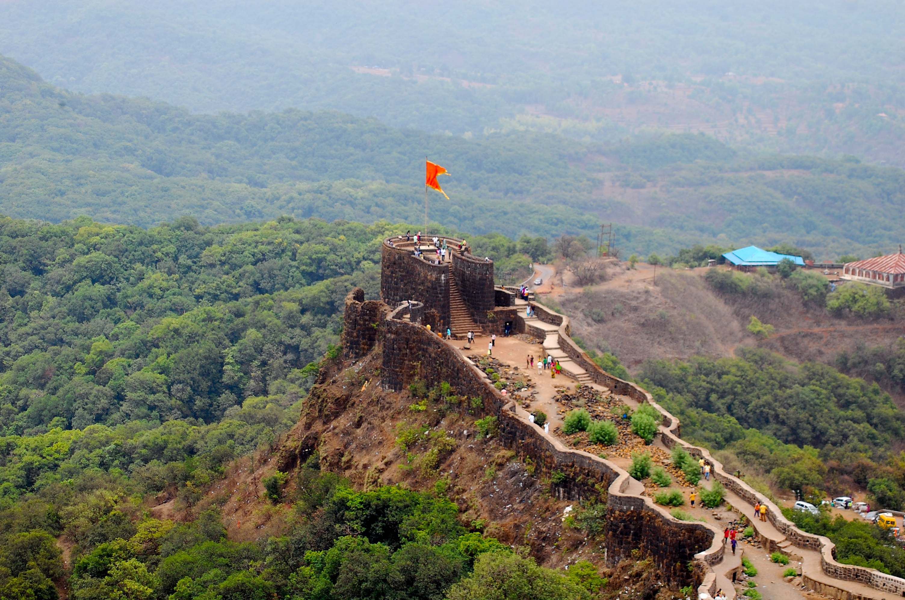
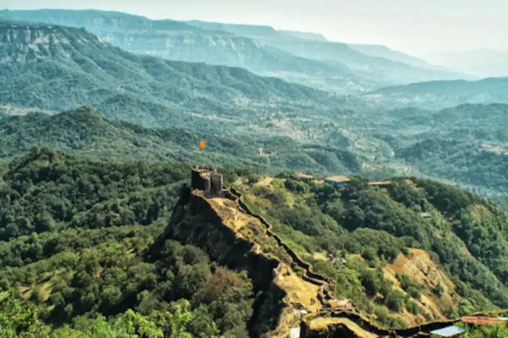
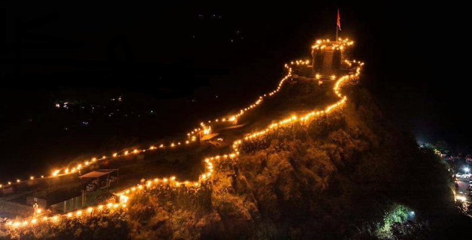

|  |  |  |
The Maratha king Chhatrapati Shivaji Maharaj commissioned Moropant Trimbak Pingle, his prime minister, to undertake the construction of this fort in order to defend the banks of the Nira and the Koyna rivers, and to defend the Par pass. It was completed in 1656.[1] The Battle of Pratapgad between Chhatrapati Shivaji Maharaj and Afzal Khan was fought below the ramparts of this fort on 10 November 1659. This was the first major test of the fledgling kingdom's army, and set the stage of the establishment of the Maratha empire. Pratapgad continued to be involved in regional politics. Sakharam Bapu, a well-known minister of Pune, was confined by his rival Nana Phadnis in Pratapgad in 1778. He was later moved from fort to fort until he died at Raigad. In 1796, Nana Phadnis, while escaping from the intrigues of Daulatrao Shinde and his minister Baloba, assembled a strong garrison in Pratapgad before heading to Mahad. In 1818, as part of the Third Anglo-Maratha War, Pratapgad surrendered by private negotiation. This was a great loss to the Maratha forces, as Pratapgad was an important stronghold, had a large garrison, and could suppress much of the country around Wai. A 17 feet high equestrian bronze statue of Shivaji was unveiled by Jawaharlal Nehru, then Prime Minister of India, on 30 November 1957, the same year a road was constructed by the Public Works Department from Kumbhrosi village up to fort.A guest house and a national park were built inside the fort in 1960. The fort is currently owned by Udayanraje Bhosale, the heir to the former Satara princely state.
The fort can be divided into the lower fort and upper fort. The upper fort was built upon the crest of the hill. It is roughly square, 180m long on each side. It has several permanent buildings, including a temple to the god Mahadev. It is located at the northwest of the fort, and is surrounded by sheer cliffs with drops of up to 250m. The lower fort is around 320m long and 110m wide. It is located at the southeast of the fort, and is defended by towers and bastions ten to twelve metres high. The Afzal tower extends out from the fort proper and defends the approach to the fort. It is said to have been constructed after the Battle of Pratapgad, and Afzal Khan's body is said to be buried under the tower. In 1661, Shivaji Maharaj was unable to visit the temple of the goddess Bhavani at Tuljapur. He decided to dedicate a temple to the goddess at this fort itself. This temple is on the eastern side of the lower fort. The hall has been rebuilt since the original construction, and consists of wooden pillars about 50' long, 30' broad and 12' high. The shrine is made of stone, and contains a clothed black stone image of the goddess. The roof of the temple is flat inside, but covered in lead covering put up by the Satara Raja Pratapsinha (1818–1839). A small spire or shikhar covers the shrine.The temple also has the sword of Maratha General Hambirao Mohite adorned with 6 diamond stones signifying that he had killed 600 soldiers in the battle. There is also a spatikha linga being worshipped inside the temple.The armors used in the battle during that period by the infantry soldiers are also on display just outside the temple A dargah of Afzal Khan is located a short while away from the fort to the south-east.